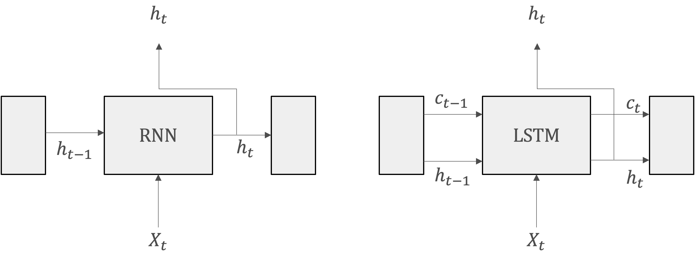
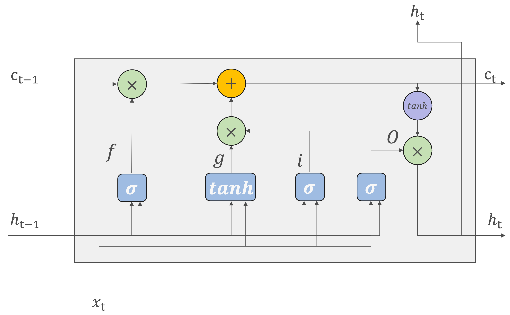
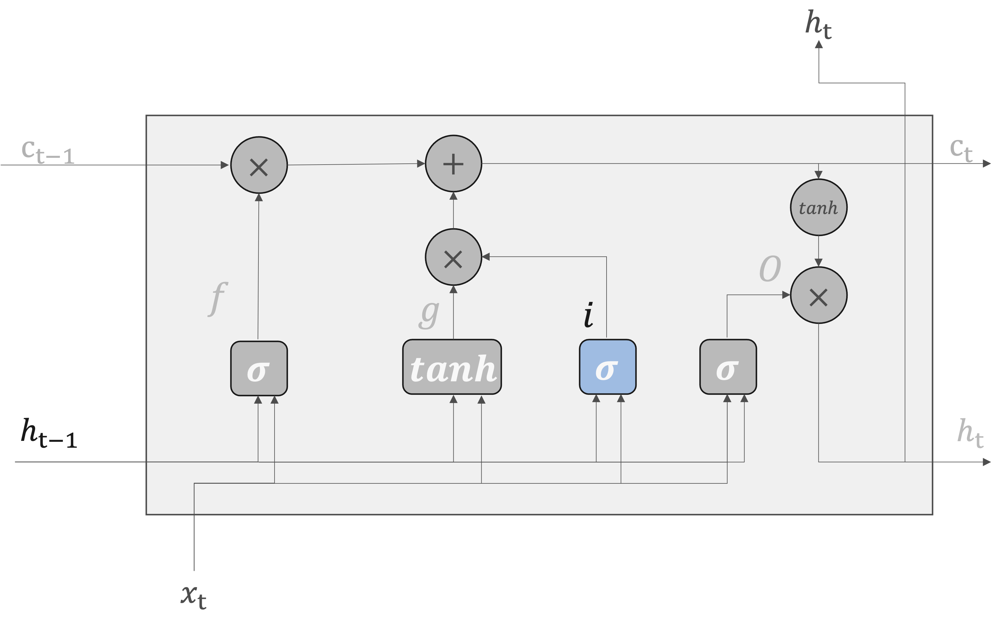
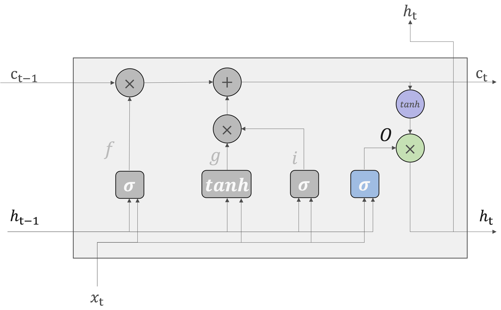
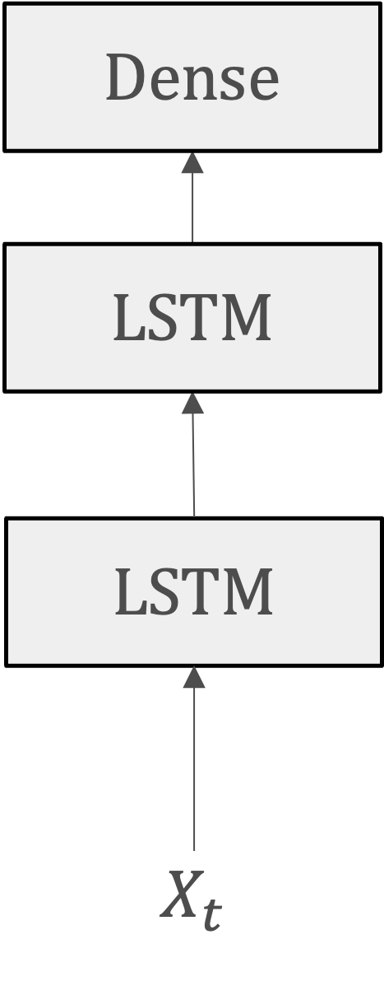

LSTM
Contents
LSTM#
RNNの学習においては勾配消失問題を解決するためには、RNNレイヤのアーキテクチャを根本から変える必要があります。
ここで登場するのは、シンプルのRNNを改良した「ゲート付きRNN」です。この「ゲート付きRNN」では多くのアーキテクチャが提案されており、その代表的な仕組みはLSTM（Long Short-Term Memory）になります。
LSTMのインタフェース#
LSTMの全体像#
RNNとLSTMレイヤのインタフェースの違いは、LSTMには\(c\)という経路があることです。この\(c\)は記憶セルと呼ばれ、これを通じてネットワークを流れる情報の流れを制御します。セル状態は、ネットワークの一種の「記憶」であり、重要な情報を長期間にわたって保持する能力を持っています。これにより、LSTMは長期間にわたる依存関係を捉えることができます。
\(c_t\)には、時刻\(t\)におけるLSTMの記憶が格納されています。具体的に言えば、現在の記憶セル\(c_t\)は、三つの入力\((c_{t-1},h_{t-1},x_t)\)から何らかの計算によって求められています。そのため、これに過去から時刻\(t\)までにおいて必要な情報が全て格納されていると考えられます。
必要な情報が詰まった記憶を元に、外部のレイヤへ隠れ状態\(h_t\)を出力します。

ゲート機構#
ゲートは、セル状態に流れる情報を制御するために使用される仕組みです。
ゲートの「開き具合」は\(0.0 - 1.0\)までの実数で表されます。そしてその数値によって、必要な情報を保持し、不要な情報を排除し、適切な時に適切な情報を出力することができます。
ここで重要なのは、ゲートの「開き具合」ということは、データから自動的に学ばせるということです。
LSTMの構造#

Note
tanh関数:tanh関数は出力を\(-1\)から\(1\)の範囲に正規化します。この数値は、何らかのエンコードされた「情報」に対する度合いが表されていると解釈できます。
シグモイド関数: シグモイド関数は出力を0から1の範囲に正規化します。データをどれだけ通すかという割合を表しますので、各ゲート（忘却ゲート、入力ゲート、出力ゲート）で情報の流れを制御するのに適しています。
そのため、ゲートではシグモイド関数、実質的な「情報」を持つデータにはtanh関数が活性化関数として使われます。
forgetゲート#
LSTMのforgetゲートでは、長期記憶から不要な情報を忘却するための制御を行っている。
ここで、forgetゲートで行う一連の計算を\(\sigma\)で表すことにします。計算は次の式で表されます。\(\sigma\)はsigmoid関数を表します。
入力
現在の入力\(x_t\)
前の時点の隠れ層の出力\(h_{t-1}\)
重みとバイアス
現在の入力\(x_t\)に適用されるゲートの重み行列\(W_x^{(f)}\)
前の時点の隠れ層の出力\(h_{t-1}\)に適用されるゲートの重み行列\(W_h^{(f)}\)
み付けされた入力とバイアスの合計にシグモイド関数によって計算されるため、\(0\) から \(1\) の値をとります。

inputゲート#
新しい情報を追加する際、何も考えずに追加するのではなく、追加する情報としてどれだけ価値があるかを判断する上で、追加する情報を選択します。これにより、長期間にわたる依存関係をより効果的に管理し、複雑なシーケンスデータを扱うことができるようになります。
具体的には、inputゲートによって重みつけされた情報が新たに追加されることになります。

新しい記憶セル#
LSTMではセルの長期記憶を保つための変数\(c_t\)が用意されています。長期記憶\(c_t\)に対して、古くなった記憶を削除したり、新しい情報を新規追加したりすることで、適当な長期記憶を可能にしています。
具体的には、
入力ゲートの計算
現在の入力\(x_t\)と前の時点の隠れ状態\(h_{t-1}\)から、inputゲート\(i_t\)がシグモイド関数を用いて計算されます。
同時に、tanh関数を用いて新しい候補セル状態\(\tilde{c}_t\)が生成されます。
セル状態の更新
inputゲート\(i_t\)と新しい候補セル状態\(\tilde{c}_t\)がアダマール積によって組み合わされます。
forgetゲート\(f_t\)を用いて、前のセル状態\(c_{t-1}\)が更新されます。
最終的なセル状態
更新された前のセル状態と新しく生成されたセル状態が加算され、新しいセル状態\(c_t\)が生成されます。

outputゲート#
outputゲートは隠れ状態\(h_t\)の形成に使用されます。
現在の記憶セル\(c_t\)は、\((c_{t-1},h_{t-1},x_t)\)を入力として求められます。そして、更新された\(c_t\)を使って、隠れ状態の\(h_t\)計算されます。ここで、\(tanh(c_t)\)の各要素に対して、「それらが次時刻の隠れ状態としてどれだけ重要か」ということを調整します。
なお、outputゲートの開き具合は、入力\(x_t\)と前の状態\(h_{t-1}\)から求めます。
\(sigmoid\)関数による出力と\(tanh\)関数によるセル状態の出力を掛け合わせ、新しい隠れ状態\(h_t\)を生成します。

Note
LSTMは、勾配消失問題を軽減するように設計されています。
ゲート機構
LSTMのゲートは、セル状態に流れる情報を精密に制御します。セル状態のゲート制御された更新は、勾配が長いシーケンスを通じても安定して伝播するのを支援し、勾配消失問題の軽減に貢献します。また、各時点での情報の重要性を評価し、必要な情報を保持しながら不要な情報を取り除くことで、ニューラルネットワークがより効率的に学習し、安定した勾配を維持できるようにします。
forgetゲートが「忘れるべき」と判断した記憶セルの要素に対しては、その勾配の要素は小さくなります。その一方で、forgetゲートが「忘れではいけない」と導いた要素に対しては、その勾配の要素は劣化することなく過去方向へ伝わります。そのため、記憶セルの勾配は、勾配消失は起こさずに伝播することが期待できるのです。
非線形性の制御
RNNの逆伝播で、「行列の積」を繰り返し行っていましたので、勾配消失が起きたのです。
LSTMでは、「行列の積」の計算ではなく「要素ごとの積」で逆伝播行います。特に、シグモイドやtanhのような非線形活性化関数は、ゲートの開閉を制御しますが、セル状態自体の更新は加算によって行われるため、勾配が長いシーケンスを通しても安定して伝播し続けることができます。
発展的なLSTM#
多層LSTM#
多層LSTM(Multi-layer LSTM, Stacked LSTMとも呼ばれます)は、複数のリカレント層を積み重ねたニューラルネットワークの構造です。各層は独自の隠れ状態を持ち、前の層からの出力を次の層の入力として受け取ります。
各層が異なるレベルの特徴を学習できるため、多層RNNは単層RNNよりも複雑なパターンを捉えることができます。
{kind=link}
双方向LSTM（Bidirectional LSTM）#
通常のLSTMは、時系列データを順方向に学習していますので、後ろにある単語やフレーズの情報を取り込むことができません。そのため、過去の情報を活用して現在の出力を決定するのには有効ですが、「未来」の情報を考慮に入れることができません。
テキスト処理のタスクでは、文の意味を完全に理解するためには、未来の情報が過去の情報と同じくらい、またはそれ以上に重要な場合があります。
Apple is something that I like to eat.
双方向LSTMはこれらの欠点を補うために設計されており,シーケンスデータの処理において、時間の前後の両方の方向から情報を捉えるために設計されます。
具体的は、双方向LSTMは、シーケンスデータを順方向（前から後ろへ）と逆方向（後ろから前へ）の両方で処理する二つのLSTM層から構成されます。
順方向のLSTM: 一方のLSTM層がシーケンスを通常の時間の流れに沿って処理し、各時点での隠れ状態を更新します。
逆方向のLSTM: もう一方のLSTM層がシーケンスを逆順に処理し、別の隠れ状態シーケンスを生成します
出力の結合: 二つの層の出力（隠れ状態）は、各時点で結合されて最終的な出力を形成します。